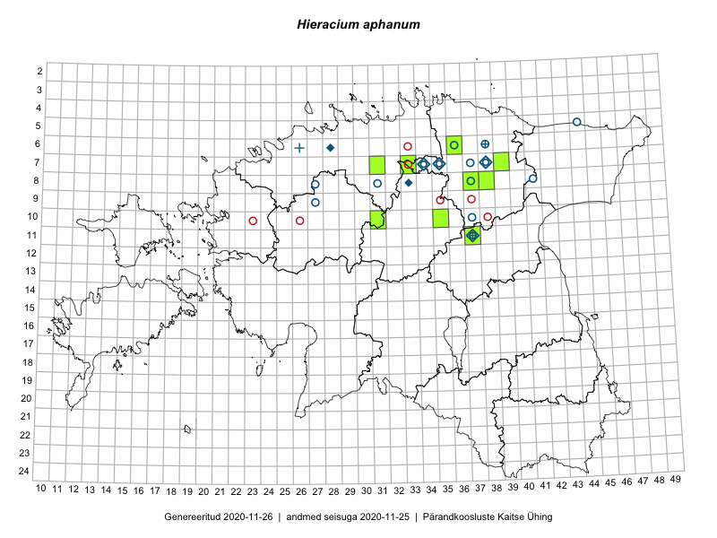

Hieracium aphanum — rakvere hunditubakas
Asteraceae :: Hieracium aphanum Üksip (56)

Kaart põhineb 56 kirjel:
herbaareksemplare 56
Taime kaasaegsed ja ajaloolised leiukohad asuvad 22 ruudus.
Tingmärgid ja ruutude arvud periooditi (U1 / V2 )
█ 2006–2020 (8/–)
◆/◇ 1971–2005 (5/2)
○ 1921–1970 (13/19)
+ kuni 1920 (2/0)
× hävinud (–/0)
? kaheldav (–/0)
| Ruut | Leidja(d) | Leiuaeg | Kirje |
|---|---|---|---|
| 05-44 | H. Salasoo | 1932-07-16 | TU250238: Hieracium aphanum Üksip |
| 08-41 | Vilma Kuusk | 1963-06-21 | TAA0000002: Hieracium aphanum Üksip |
| 07-37 | Linda Viljasoo | 1956-08-04 | TAA0000003: Hieracium aphanum Üksip |
| 10-37 | Linda Viljasoo | 1956-08-01 | TAA0000004: Hieracium aphanum Üksip |
| 08-37 | 1947-07-26 | TAA0000005: Hieracium aphanum Üksip | |
| 07-37 | Linda Viljasoo | 1956-08-04 | TAA0000006: Hieracium aphanum Üksip |
| 07-37 | Linda Viljasoo | 1956-08-04 | TAA0000007: Hieracium aphanum Üksip |
| 06-28 | Toomas Kukk | 2000-08-03 | TAA0000008: Hieracium aphanum Üksip |
| 08-37 | Silvia Talts | 1937-06-19 | TAA0000009: Hieracium aphanum Üksip |
| 08-37 | Silvia Talts | 1937-06-19 | TAA0000010: Hieracium aphanum Üksip |
| 10-37 | Albert Üksip | 1942-04-20 | TAA0000011: Hieracium aphanum Üksip |
| 11-37 | Albert Üksip | 1942-04-25 | TAA0000012: Hieracium aphanum Üksip |
| 07-38 | 1985-07-15 | TAA0000013: Hieracium aphanum Üksip | |
| 08-37 | K. Eichwald | 1937-06-21 | TU271716: Hieracium aphanum Üksip |
| 07-34 | Albert Üksip | 1940-07-10 | TU271717: Hieracium aphanum Üksip |
| 08-37 | K. Eichwald | 1937-06-19 | TU271718: Hieracium aphanum Üksip |
| 08-37 | K. Eichwald | 1937-06-19 | TU271719: Hieracium aphanum Üksip |
| 11-37 | L. Pihlapuu | 1973-07-23 | TU271720: Hieracium aphanum Üksip |
| 08-31 | Albert Üksip | 1948-07-08 | TU271721: Hieracium aphanum Üksip |
| 07-37 | K. Eichwald | 1937-06-20 | TU271722: Hieracium aphanum Üksip |
| 07-37 | K. Eichwald | 1937-06-20 | TU271723: Hieracium aphanum Üksip |
| 10-37 | Albert Üksip | 1942-07-30 | TU271724: Hieracium aphanum Üksip |
| 07-34 | Albert Üksip | 1940-06-27 | TU271725: Hieracium aphanum Üksip |
| 11-37 | Albert Üksip | 1943-07-15 | TU271726: Hieracium aphanum Üksip |
| 11-37 | Albert Üksip | 1942-08-08 | TU271727: Hieracium aphanum Üksip |
| 07-35 | Albert Üksip | 1935-07-14 | TU271728: Hieracium aphanum Üksip |
| 06-36 | Albert Üksip | 1935-06-28 | TU271729: Hieracium aphanum Üksip |
| 07-34 | Albert Üksip | 1940-07-10 | TU271730: Hieracium aphanum Üksip |
| 07-38 | L. Pihlapuu | 1963-06-19 | TU271731: Hieracium aphanum Üksip |
| 07-38 | L. Pihlapuu | 1963-06-19 | TU271732: Hieracium aphanum Üksip |
| 08-41 | L. Pihlapuu | 1963-06-21 | TU271733: Hieracium aphanum Üksip |
| 08-41 | L. Pihlapuu | 1963-06-21 | TU271734: Hieracium aphanum Üksip |
| 11-37 | Albert Üksip | 1942-07-31 | TU271735: Hieracium aphanum Üksip |
| 11-37 | Albert Üksip | 1942-07-26 | TU271736: Hieracium aphanum Üksip |
| 06-38 | Hugo Salasoo | 1932-07-18 | TAM0004949: Hieracium aphanum Üksip |
| 06-38 | Hugo Salasoo | 1932-07-18 | TAM0004950: Hieracium aphanum Üksip |
| 07-37 | Hugo Salasoo | 1937-06-20 | TAM0004954: Hieracium aphanum Üksip |
| 09-27 | H. Hendrikson | 1932-07-01 | TAM0019019: Hieracium aphanum Üksip |
| 06-38 | R. Lehbert | 1903-06-11 | TAM0071421: Hieracium aphanum Üksip |
| 08-38 | Toomas Kukk | 2006-07-19 | TAA0027144: Hieracium aphanum Üksip |
| 08-33 | Tõnu Ploompuu | 2000-07-08 | TALL C009024: Hieracium aphanum Üksip |
| 07-34 | Tõnu Ploompuu | 1991 | TALL C009026: Hieracium aphanum Üksip |
| 10-31 | Peedu Saar, Toivo Sepp | 2016-07-22 | TAA0133250: Hieracium aphanum Üksip |
| 07-31 | Peedu Saar, Toivo Sepp | 2016-07-18 | TAA0133251: Hieracium aphanum Üksip |
| 07-39 | Kaili Orav, Silvia Pihu | 2015-06-17 | TAA0135435: Hieracium aphanum Üksip |
| 10-35 | Ott Luuk | 2015-07-27 | TAA0142431: Hieracium aphanum Üksip |
| 10-35 | Ott Luuk | 2015-07-27 | TAA0142432: Hieracium aphanum Üksip |
| 08-38 | Peedu Saar, Ott Luuk | 2017-07-18 | TAA0141165: Hieracium aphanum Üksip |
| 06-36 | Karin Kikas, Elle Rajandu | 2016-06-28 | TAA0141546: Hieracium aphanum Üksip |
| 07-33 | Indrek Tammekänd, Eike Vunk, Murel Truu | 2018-06-10 | TAA0147715: Hieracium aphanum Üksip |
| 11-37 | Peedu Saar, Ott Luuk | 2019-06-10 | TAA0149274: Hieracium aphanum Üksip |
| 11-37 | Peedu Saar, Ott Luuk | 2019-06-10 | TAA0149275: Hieracium aphanum Üksip |
| 11-37 | Peedu Saar, Ott Luuk | 2019-06-10 | TAA0149276: Hieracium aphanum Üksip |
| 06-38 | H. Salasoo | 1932-07-18 | TU250170: Hieracium aphanum Üksip |
| 06-38 | R. Lehbert | 1878-07-20 | TAM0071408: Hieracium aphanum Üksip |
| 06-26 | P. Glehn | 1856-06-30 | TAM0125654: Hieracium aphanum Üksip |
Ruutude arv uue atlase andmekogu järgi. Muuhulgas arvestab vanemat herbaariumi, 2005. aasta atlase välitöölehtedelt uuesti digitaliseeritud andmeid jne. Uue atlase andmekogust pärinevad andmed on kaardile kantud siniste sümbolitega.↩︎
Ruutude arv 2005. aasta atlase (Kukk, T., Kull, T., Eesti taimede levikuatlas. Eesti Maaülikool, Põllumajandus- ja Keskkonnainstituut, Tartu, 2005) järgi. Andmeallikana on kasutatud levik.exe programmi, kus igas ruudus on registreeritud vaid uusim leid. Seetõttu on vanemate perioodide kohta andmed puudulikud. Kasutatud levik.exe andmestikus leidub mõningaid kõrvalekaldeid atlase trükis ilmunud versioonist, sagedamini tarnade ja käpaliste seas. Lisaks leidub selles andmestikus valik liike (peamiselt väheste leidudega tulnuktaimed), mille kaarte trükis ei avaldatud. Vana atlase andmed ruutudest, milles ei ole uue atlase andmekogus leide enne 2006. aastat, on kaardil esitatud punaste sümbolitega. Vana atlase andmetel hävinud ja kaheldavaid leiukohti pole hilisemate (taas)leidude põhjal korrigeeritud.↩︎